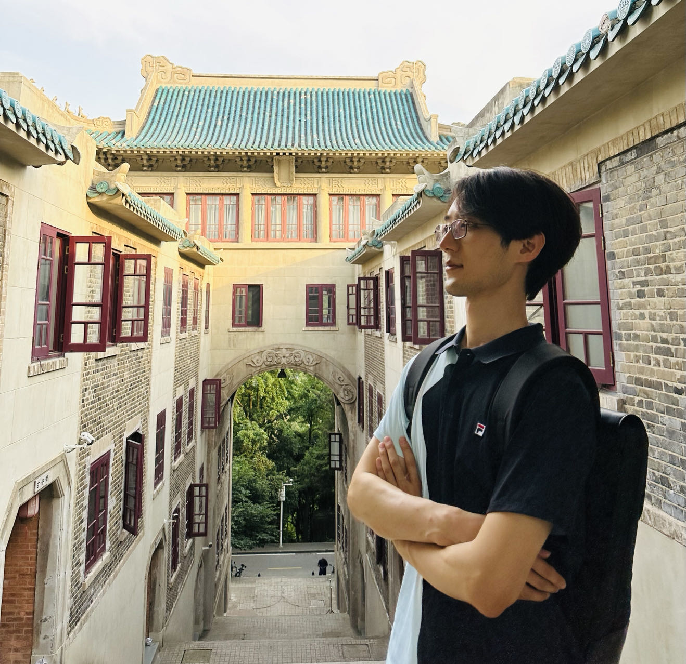

Home
Research
Teaching
Activities
Welcome to Keyu Wang's Homepage
I am now a postdoc of mathematics at University of Vienna.

Curriculum Vitae
2024- Postdoc at Universität Wien (hosted by
Jian-Rong Li
)
2023-2024 ATER at Université Paris Cité
2020-2024 Doctoral student in Mathematics at Université Paris Cité, lab IMJ-PRG (advisor:
David Hernandez
)
2019 spring Exchange student via Erasmus at ETH Zürich (hosted by
Giovanni Felder
)
2018-2020 Master in Mathematics at Ecole Normale Supérieure
2017-2018 Double Bachelor in Mathematics-Physics at Ecole Normale Supérieure
2014-2018 Bachelor in Mathematics at Tsinghua University
Contact
keyu.wang@univie.ac.at
Oskar Morgenstern-Platz 1
1090 Vienna, Austria
Links
homepage at IMJ-PRG